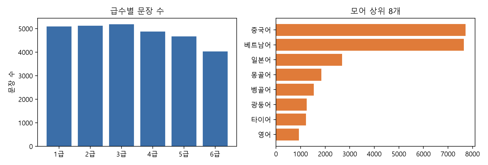
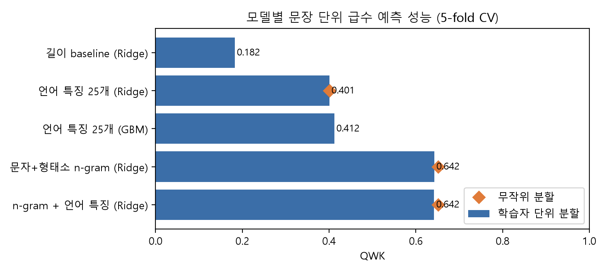
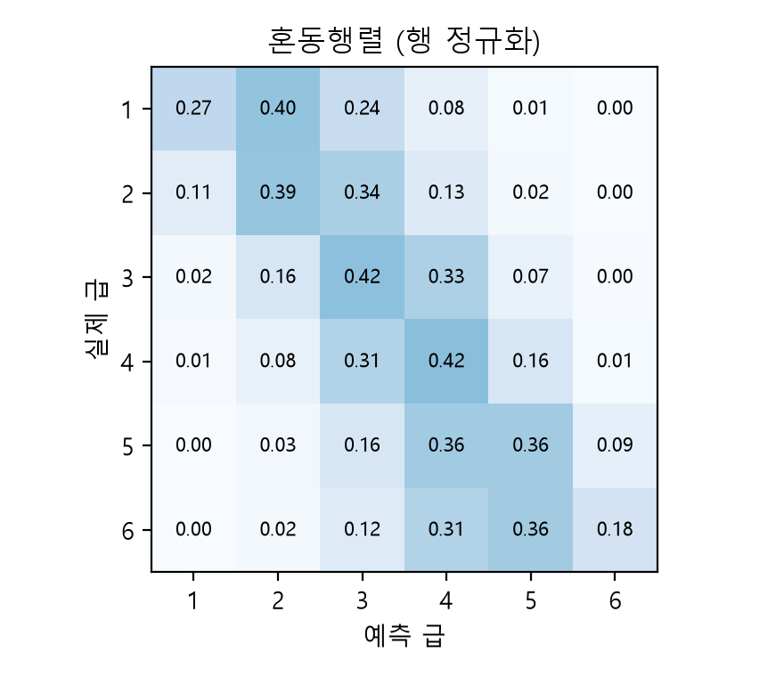
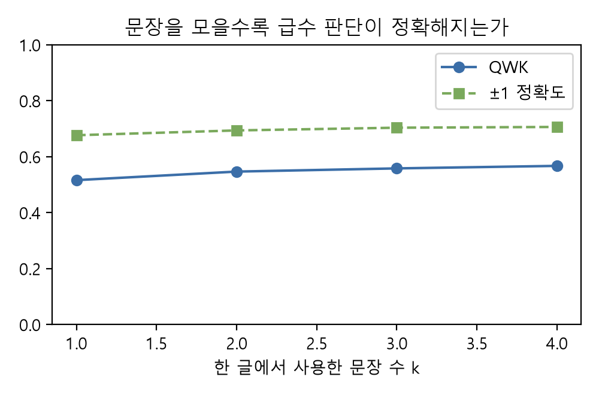
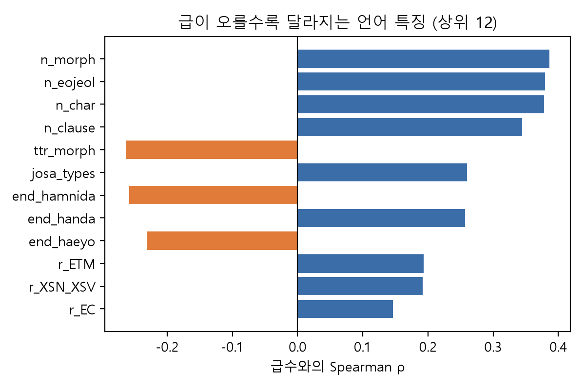
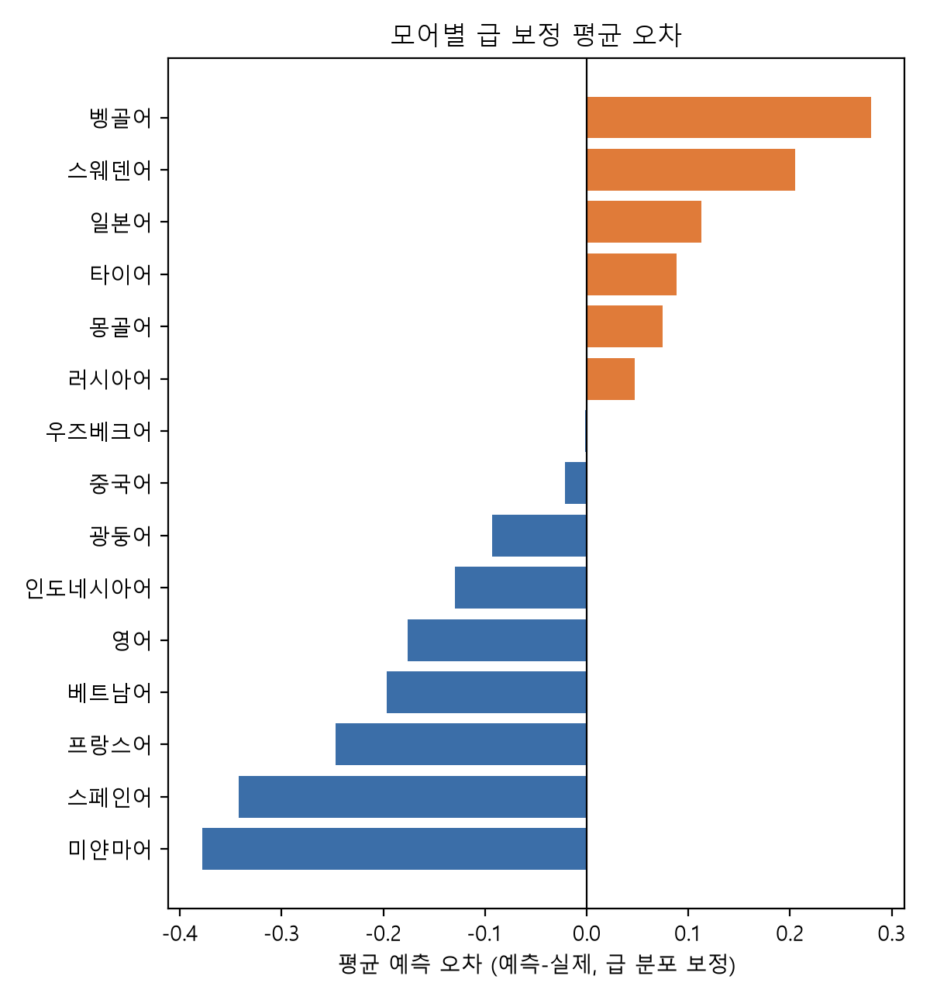
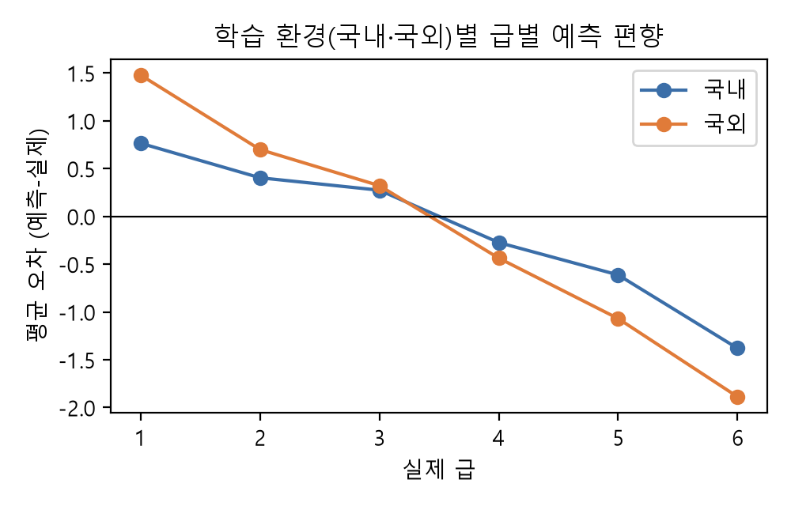
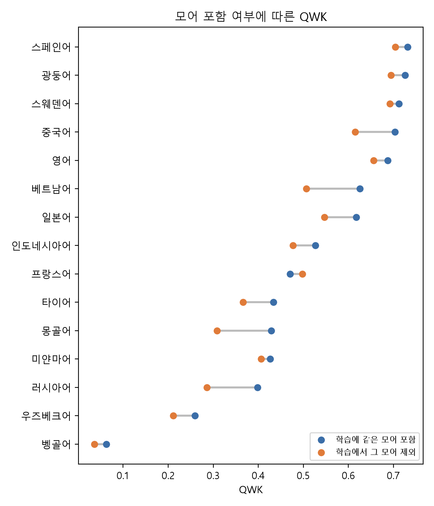

자동 글쓰기 평가(Automated Essay Scoring, AES)는 사람 채점자의 판단을 재현하는 기술이다. 표면 특징과 선형 회귀를 쓰던 1세대(Page, 1966; Attali & Burstein, 2006), 신경망이 특징 설계를 대신한 2세대(Taghipour & Ng, 2016; Dong et al., 2017), 루브릭과 LLM으로 점수와 근거를 함께 만드는 3세대(Mizumoto & Eguchi, 2023; Lee et al., 2024)로 발전해 왔다. 그러나 어느 세대든 학습 데이터와 다른 집단·주제의 글이 들어오면 성능이 크게 떨어진다는 문제가 남아 있다(Li & Ng, 2024).
본 프로젝트에 배정된 국립국어원 한국어 학습자 말뭉치는 108개 언어권 성인 학습자의 글이고, 라벨은 글의 점수가 아니라 작성자의 한국어 급수(1–6급)다. 따라서 과제는 "이 글은 몇 점인가"가 아니라 "이 글을 쓴 사람은 몇 급인가"를 맞히는 간접 AES가 된다. 이 데이터에는 다른 AES 데이터에 없는 정보, 즉 작성자의 모어(L1)와 학습 환경이 있다. 같은 급이라도 모어마다 틀리는 지점과 문체가 다르므로, 이는 수업에서 다룬 주제 변화에 따른 성능 저하 문제를 작성자 집단의 변화라는 관점에서 살펴볼 수 있다.
본 연구의 질문은 다음 네 가지다.
말뭉치 원본 파일은 국립국어원에 이용 신청했지만(접수번호 mfe-20261023-2) 승인에 1–2일이 걸려 마감 전에 받을 수 없었다. 그래서 같은 말뭉치의 공개 서비스인 '한국어 학습자 말뭉치 나눔터' 원시 말뭉치 검색을 이용했다. 검색 결과의 각 행은 (모어, 급수, 학습 환경, 표본 ID, 왼쪽 문맥 + 중심어 + 오른쪽 문맥)으로 구성되고, 문맥을 이어 붙이면 학습자가 쓴 한 문장이 된다.
있습니다., 그래서, 저는, 때문에, 한다.).최종 데이터는 28,971문장, 18,909개 글(표본), 75개 모어이고, 급별로 4,032–5,185문장으로 거의 균형이다(그림 1). 학습 환경은 국내 19,803문장, 국외 9,168문장이다.

수업 안내에 따라 GPU와 유료 API 없이 노트북 CPU에서 재현 가능한 모델만 사용했다. 모두 1–6급을 실수값으로 예측하는 회귀이며, 평가할 때 반올림해 1–6 범위로 자른다.
| 모델 | 입력 표현 | 회귀기 |
|---|---|---|
| M0 길이 baseline | 어절 수, 글자 수 | Ridge (α=1) |
| M1 언어 특징 | Kiwi 형태소 분석 기반 특징 25개: 길이, 형태소 TTR, 조사 종류 수, 연결어미(EC)·관형형 전성어미(ETM)·명사형 전성어미(ETN)·보조용언(VX)·의존명사(NNB) 비율, 종결 문체(합니다/해요/한다), 절 수, 어휘 희귀도 등 | Ridge / HistGradientBoosting |
| M2 n-gram | 문자 1–3gram TF-IDF + 형태소/품사 1–2gram TF-IDF (min_df=2, sublinear tf) | Ridge (α=1) |
| M3 결합 | M2 + M1 (표준화) | Ridge (α=1) |
형태소 분석기: kiwipiepy 0.24.1. 라이브러리: scikit-learn 1.9.1, numpy 2.5.3, pandas 3.1.0, scipy 1.18.1, Python 3.12.10.
코드: {{GITHUB_URL}} src/collect.py(수집), src/features.py(특징), src/run_experiments.py(실험 전체). 말뭉치 원문은 이용 약관에 따라 저장소에 포함하지 않았다.
| 모델 | 분할 | QWK | Acc | Adj±1 | MAE | Spearman |
|---|
표 1. 문장 단위 급수 예측 성능 (5-fold CV, 28,971문장). 굵은 행이 최고 성능.




| 특징 | 1급 | 3급 | 6급 |
|---|
표 2. 주요 특징의 급별 평균.


| 모어 | 문장 수 | 평균 급 | 원시 편향 | 급 보정 편향 | QWK |
|---|
표 3. 원시 편향이 큰 모어들의 원시 편향과 급 보정 편향 비교.
{{RESULT_RQ3}}
Attali, Y., & Burstein, J. (2006). Automated essay scoring with e-rater® V.2. Journal of Technology, Learning, and Assessment, 4(3).
Dong, F., Zhang, Y., & Yang, J. (2017). Attention-based recurrent convolutional neural network for automatic essay scoring. In Proceedings of CoNLL 2017 (pp. 153–162). ACL.
Hewlett Foundation. (2012). The Hewlett Foundation: Automated Essay Scoring [Data set]. Kaggle. https://www.kaggle.com/c/asap-aes
Lee, S., Cai, Y., Meng, D., Wang, Z., & Wu, Y. (2024). Unleashing large language models' proficiency in zero-shot essay scoring. In Findings of EMNLP 2024 (pp. 181–198). ACL.
Li, S., & Ng, V. (2024). Automated essay scoring: A reflection on the state of the art. In Proceedings of EMNLP 2024. ACL.
Mizumoto, A., & Eguchi, M. (2023). Exploring the potential of using an AI language model for automated essay scoring. Research Methods in Applied Linguistics, 2(2), 100050.
Page, E. B. (1966). The imminence of grading essays by computer. Phi Delta Kappan, 47(5), 238–243.
Taghipour, K., & Ng, H. T. (2016). A neural approach to automated essay scoring. In Proceedings of EMNLP 2016 (pp. 1882–1891). ACL.
국립국어원. 한국어 학습자 말뭉치 나눔터. https://kcorpus.korean.go.kr (2026. 10. 23. 접속)
Kiwi: 지능형 한국어 형태소 분석기 (kiwipiepy 0.24.1). https://github.com/bab2min/kiwipiepy
Pedregosa, F. et al. (2011). Scikit-learn: Machine learning in Python. Journal of Machine Learning Research, 12, 2825–2830.